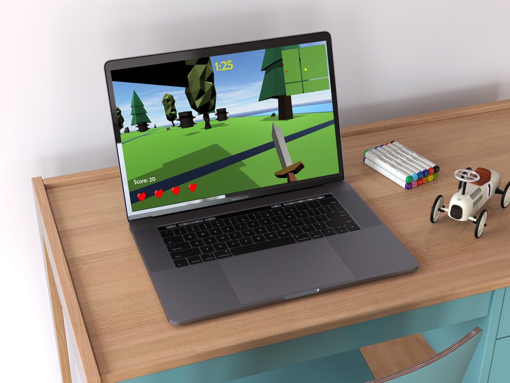
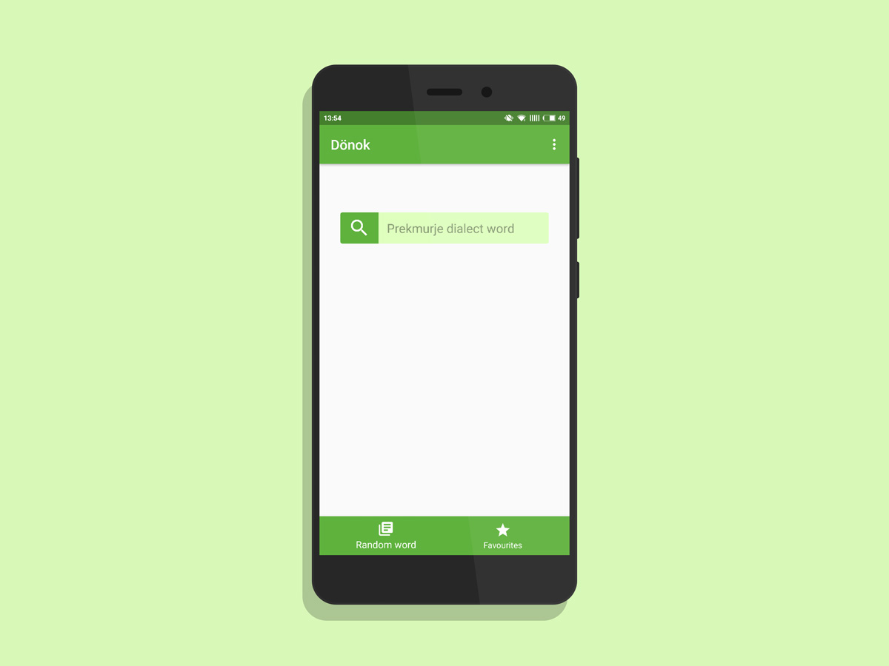

Hi! I'm Damjan, a software engineer based in Ljubljana. I am ambitious, reliable and have a great passion in tech and business.
One day I woke up and realised that today I am receiving my Bachelors. My parents were proud and so was I. I conquered Multimedia Engineering. Now what's next? This year I decided to brother my view, to challenge myself. That is why I am currently in pursuit of my master’s degree in Business Informatics.
I am experienced in working with the users, public speaking and working in a team. Showed a history of working in the fields of programming, telecommunications, event organisation, digital media, social media and marketing.
|  |
The game is based on the 1975’ movie Monty Python and the Holy Grail. You play as King Arthur embarking on an adventure to find the Holy Ale. Unity, C# |
|
A project where I built a portfolio website for a graphic designer who wanted to represent her and her work. The website was built from scratch. HTML, CSS, XML, Javascript, Bootstrap |
|
|  |
A sort of a dictionary for the Prekmurje dialect, the most divergent dialect in Slovenia. Dönok is a translation app made for Android that provides translations between Prekmurje dialect and Slovene language. Java, HTML, Android Studio |